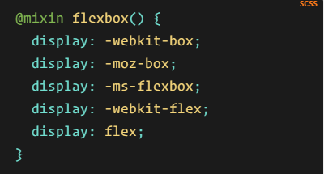
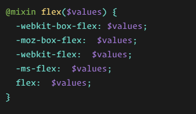

Flexbox requiere algunos prefijos de proveedores para admitir la mayoría de los navegadores posibles. No solo incluye anteponer propiedades con el prefijo de proveedor, sino que en realidad hay nombres de propiedades y valores completamente diferentes. Esto se debe a que la especificación Flexbox ha cambiado con el tiempo, creando versiones "antiguas", "nuevas" y "nuevas" .
Quizás la mejor manera de manejar esto es escribir en la sintaxis nueva (y final) y ejecutar su CSS a través de Autoprefixer , que maneja muy bien las fallas .
Alternativamente, aquí hay un Sass @mixinpara ayudar con algunos de los prefijos, que también le da una idea de qué tipo de cosas deben hacerse:

